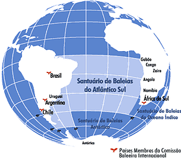

Durante o século XX, cerca de 2,9 milhões de baleias foram mortas em todo o mundo
A Comissão Internacional Baleeira (CIB), organismo internacional formado por mais de 80 países, tem como foco de atuação a conservação de baleiras e a gestão de sua caça. Desde 1998, propõe a criação do Santuário de Baleias do Atlântico Sul, evidenciando a importância de parcerias transfronteiriças na gestão de projetos de conservação.
Durante o século XX, cerca de 2,9 milhões de baleias foram mortas em todo o mundo, levando a diminuição dos estoques de baleias em todos os oceanos. Aproximadamente 71% das baleias caçadas no mundo foram mortas no hemisfério sul. Baleias fin, cachalote, azul, jubarte, sei, franca e minke foram as espécies mais caçadas no Oceano Austral (Atlântico Sul e a Antártida). Todas são consideradas ameaçadas de extinção mundialmente ou no Brasil. Para tentar contornar esse cenário, foi estabelecida uma "moratória" sobre a caça comercial, que entrou em vigor em 1985. Entretanto, outras atividades humanas passaram a ameaçar baleias e outros cetáceos, como a captura acidental, poluição sonora, poluição marinha (química e por lixo, principalmente plástico), colisão com navios, animais enroscados em redes, e mudanças climáticas.
Para garantir a recuperação das populações de baleias, foi proposta a criação do Santuário de Baleias do Atlântico Sul, que visa manter ou aumentar os níveis dos estoques das diferentes espécies de baleias que ocorrem na região, mitigando ameaças para essas populações.
Pelo menos 51 espécies de cetáceos habitam as águas do Oceano Atlântico Sul. Seis delas (azul, fin, sei, minke Antártica, jubarte e franca) são baleias altamente migratórias que se alimentam nos oceanos Antártico e Subantártico durante o verão e se reproduzem em águas tropicais, subtropicais e temperadas no inverno e primavera. Outras espécies de destaque que também serão protegidas pelo Santuário são: cachalote, bryde e pigmeia, além das Toninhas, espécie endêmica, menor e mais ameaçado cetáceo do Atlântico Sul.
O Santuário da Antártica seria seu limite e, juntos, protegeriam todas as baleias que visitam as águas jurisdicionais brasileiras, bem como as da Argentina e do Uruguai, e de todo litoral sudoeste do continente africano.
O Santuário também pretende promover, de forma coordenada, pesquisa científica não-letal e não-extrativa na região, especialmente em países em desenvolvimento, por meio de cooperação internacional com a participação ativa da CIB. Entre seus objetivos, constam o desenvolvimento do uso econômico sustentável, não extrativo e não-letal de baleias para o benefício das comunidades costeiras na região (por exemplo, observação de baleias e atividades educacionais), a integração entre pesquisa nacional, esforços de gestão e estratégias de conservação em uma estrutura cooperativa, maximizando a eficácia na gestão.
A partir do desenvolvimento de pesquisa não letal, será possível fazer o monitoramento da recuperação das populações de baleias quase extintas, analisar as ameaças e as medidas de mitigação (intervenção humana com o intuito de reduzir ou remediar um determinado impacto ambiental nocivo), além de estabelecer projetos e iniciativas para melhor compreender as rotas migratórias e os padrões de movimento desses animais. O Santuário de Baleais do Atlântico Sul promoverá a coordenação entre áreas protegidas, seja no âmbito nacional ou no de outras iniciativas internacionais relevantes, como a Convenção para a Proteção do Patrimônio Mundial, Cultural e Natural da UNESCO e o MAB – Programa Homem e a Biosfera, em prol da conservação dos Cetáceos.
A proposta do Santuário não é inédita, foi anunciada pela primeira vez na 50ª reunião da CIB, que aconteceu no Sultanato de Omã. Em 2001, na 53ª reunião, a proposta foi avaliada pela primeira vez, mas não foi adotada. Nas reuniões seguintes, conseguiu os votos da maioria dos Estados Membros da CIB, mas não 75% dos votos necessários para sua aprovação. Na 65ª reunião da CIB, em 2014, foi reapresentada pelo Brasil, em conjunto com a Argentina, África do Sul, Uruguai e Gabão, quando 69% dos Estados Membros votaram em favor do Santuário de Baleias do Atlântico Sul.
Para a próxima reunião da CIB, a ser realizada entre os dias 20 e 28 de outubro deste ano, em Portoroz - Eslovênia, o Brasil, em conjunto com os demais países proponentes, reapresentará a proposta, que foi atualizada, com a inclusão de Plano de Manejo do Santuário atendendo plenamente às recomendações do Comitê Científico da CIB, referendado na última reunião deste comitê realizada na Eslovênia em Junho/2016. Para ampliar as chances de aprovação e divulgar essa importante iniciativa dos governos do Brasil, Argentina, Uruguai, África do Sul e Gabão em prol da conservação das grandes espécies de cetáceos que habitam o Atlântico Sul, no dia 18 de agosto será lançada uma campanha global pró Santuário, cujo objetivo é sensibilizar e engajar a sociedade na mobilização de seus países em prol das baleias.
O WWF-Brasil apoia a criação do Santuário e, por meio do Programa Marinho, além de ser parceiro de organizações locais para o monitoramento de cetáceos na costa carioca, também atua em conjunto com outros países no desenvolvimento de ações de conservação desses animais.
Segundo Anna Carolina Lobo, coordenadora do Programa, “por se tratarem de animais de grande mobilidade, é necessária uma visão integrada de paisagem. O trabalho que desenvolvemos com a Fundación Vida Silvestre, da Argentina, no âmbito da conservação da Toninha, é fruto desse pensamento.” Ela também mostra seu suporte à empreitada da CIB, porque “esse pequeno cetáceo, o mais ameaçado do Atlântico Sul, ainda que não seja uma baleia, também será beneficiado com a criação do santuário.”.
Países membros da CIB em azul

Baleia jubarte
Mapa demarcando Santuário de Baleias do Atlântico Sul
.gif)